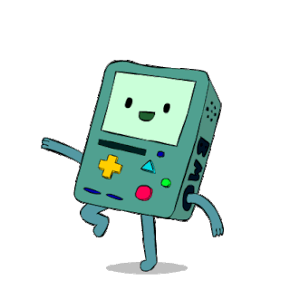

Interfaz de Usuario BiciMAD
Test de Conexión
Verifica tu conexión API.
Estación más cercana a mi ubicación
Encuentra la estación de BiciMAD más cercana a ti.
Ruta óptima
Calcula la ruta óptima para llegar a tu destino.
Calcula tu huella ecólogica
Reduce tu huella de carbono usando BiciMAD.